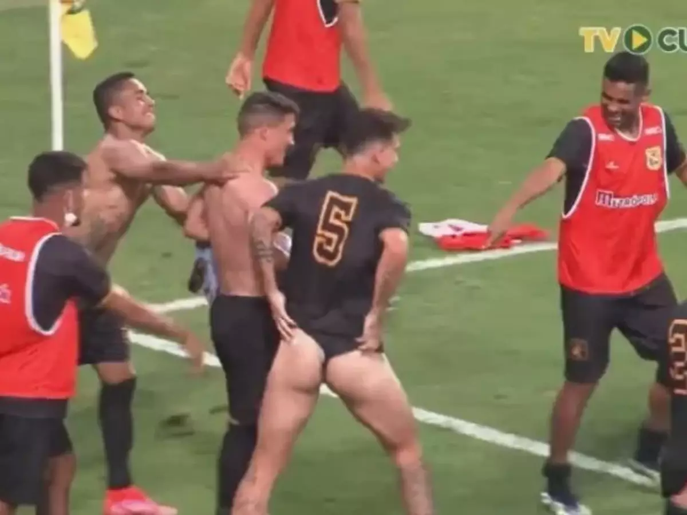

O final mais inesperado pelos amantes do futebol
Por: Aurudas 67 resenha master
No ultimo jogo da Copa do Mundo, entre Brasil e Portugual, aconteceu coisas que chocaram o mundo inteiro. Na tarde do dia 12 de julho, durante o jogo decisivo da copa, os jogadores entraram em greve por que não eram permitidos de usar calcinha fio dental durante os jogos, por que segundo eles: "é mais confortável", e como a diretoria não permitia que eles usassem. Junto com cartazes e gritos eles abaixaram seus calçoes de treino e gritaram em harmonia "de calçinha em calçinha nós vamos trazer o hexazinha" E assim acabou a copa do mundo 2026.